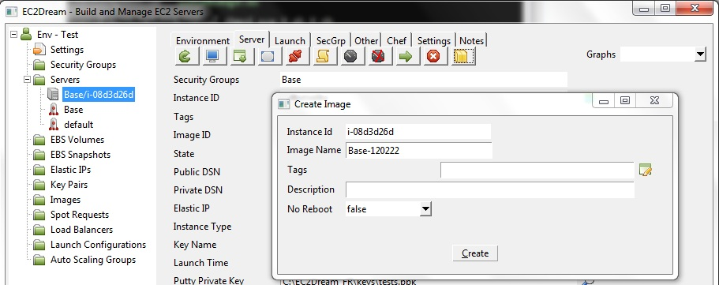
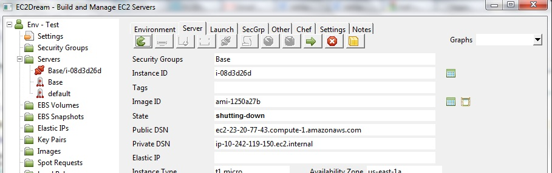
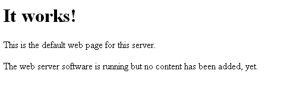
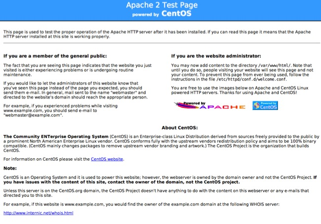

Using Hosted Chef
Setup for Hosted Chef
1. Find (or setup) the location of Chef Repository in the Settings panel.2. For Windows clients follow the Chef Workstation Setup for Windows
NOTE: For Windows you can alternatively install the chef workstation into your current ruby:
a. Download the Ruby Devkit from http://rubyinstaller.org/downloadsDevKit. At time of writing latest version is:
https://github.com/downloads/oneclick/rubyinstaller/DevKit-tdm-32-4.5.2-20111229-1559-sfx.exe
b. Unzip to a folder
c. In a windows command window cd the the folder and run
ruby dk.rb init
ruby dk.rb install
d. Run:
gem install ruby-wmi
gem install win32-process
gem install win32-service
gem install win32-open3 (only for Ruby 1.8.7)
gem install chef
NOTE: When installing ruby-wmi if you get error: SyntaxError: C:/installs/ruby19_mingw/lib/ruby/gems/1.9.1/gems/ruby-wmi-0.2.2/lib/ruby-wmi/base.rb:52: syntax error, unexpected :, expecting keyword_then or , or ;
Then edit the file ruby-wmi/base.rb, lines 52 and 53 and change :'s to ;'s
3. For Other clients follow either:
Workstation Setup for Debian and Ubuntu
Workstation Setup for CentOS, Red Hat, Fedora
Workstation Setup for Mac OS X
4. Uupload the apache2 cookbook from the Chef Repository to Hosted Chef.
Build a Base Server for Hosted Chef
1. Edit cookbooks/base_hosted/attributes/default.rb and change the atributes ORGANIZATION to your organization in Hosted Chef.Copy your organisation verification key file to the cookbooks/base_hosted/files/default directory
2. Launch a new base server and when running specify in the Server panel a Chef Node of 'base_hosted' then press the Chef button
3. Create a Base_hosted Image
a. For EBS Images create an Image by pressing on the Create Image button

b. For Instance Store Images:
-Configure an run the bundle.rb script on the server
-Register the image by pressing the Create Image button
4. Shutdown the server by pressing the Terminate button
and update the base launch profile with the new image.

Run the application
1. Create or update the launch profile for App with an Image id for the Base_hosted Image created earlier and specify in the user data:chef_run_list=recipe[apache2]
NOTE: For Windows Servers use iis instead of apache2
2. Launch the server and the apache2 application will install at startup
3. The apache is running by going to a browser and run http://ec2-99-99-999-999.compute-1.amazonaws.com using the Public DSN from the server panel
For ubuntu servers you will see an initial server like:

and for Centos:
